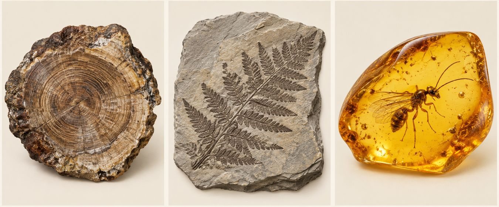
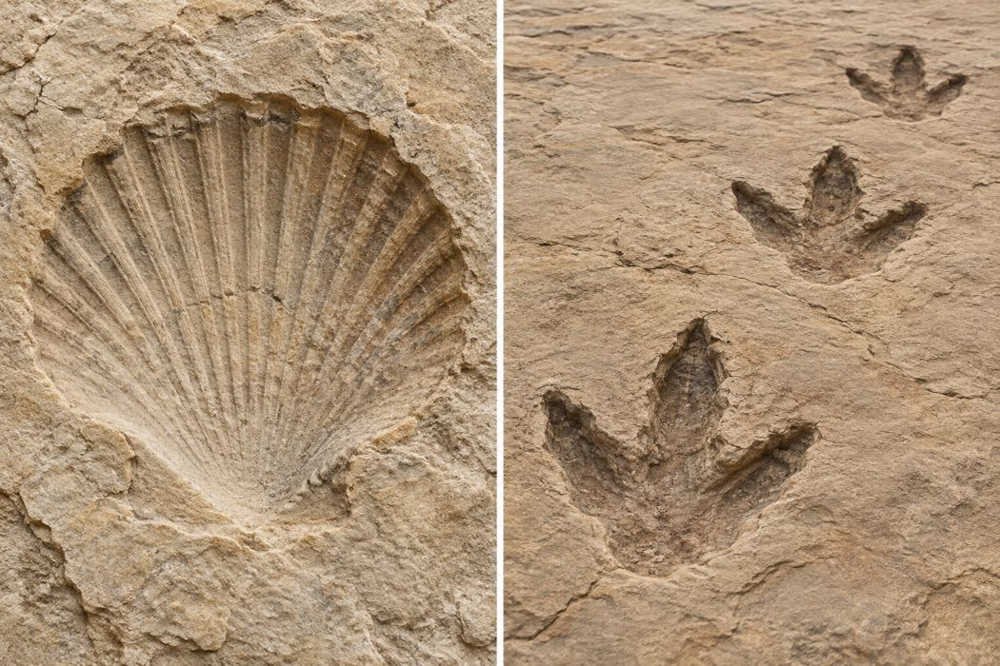
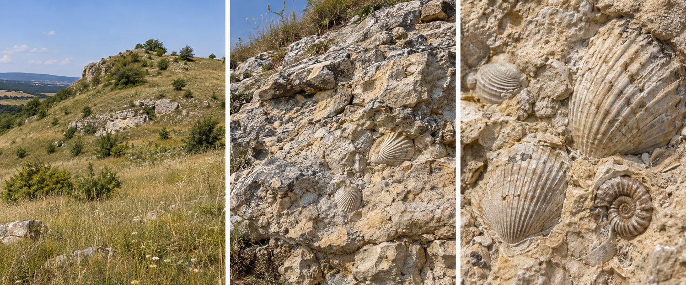

Fundort A
Fossil L in einer Schicht
Schritt 1 · Ein Gedanke nach dem anderen
Hier lernst du in kleinen Schritten.
Danach wird der nächste Schritt frei.
Du brauchst kein Arbeitsblatt. Du kannst eine Pause machen. Öffne später denselben Link auf demselben Gerät und im selben Browser.
Schritt 2 · Ein Gedanke nach dem anderen

Auf dem Bild siehst du eine alte Schale im Stein.
Das Tier lebte vor sehr langer Zeit.
Ein Fossil ist ein erhaltener Rest oder eine Spur eines Lebewesens aus einer früheren Erdzeit.
Schritt 3 · Ein Gedanke nach dem anderen
Ordne die drei Schritte mit den Pfeilen. Der erste Schritt gehört nach oben.
Schritt 4 · Ein Gedanke nach dem anderen
Viele tote Tiere werden gefressen oder zerfallen.
Eine schnelle Bedeckung mit Sand schützt die Reste. So kann eher ein Fossil entstehen.
Harte Schalen bleiben häufiger erhalten als weiche Körperteile.
Schritt 5 · Ein Gedanke nach dem anderen

Wasser kann gelöste Stoffe mitbringen. Diese Stoffe heißen Mineralien.
Mineralien können einen Körperrest nach und nach ersetzen. Seine Form bleibt erhalten.
So kann eine Versteinerung entstehen.
Schritt 6 · Ein Gedanke nach dem anderen
Ein Blatt liegt in weichem Schlamm.
Das Blatt verschwindet später. Seine Form bleibt im festen Gestein sichtbar.
Das ist ein Abdruck.
Schritt 7 · Ein Gedanke nach dem anderen
Manche Bäume geben eine klebrige Flüssigkeit ab. Sie heißt Harz.
Harz kann ein kleines Tier einschließen.
Nach sehr langer Zeit kann aus Harz Bernstein werden. Das Tier bleibt darin erhalten.
Schritt 8 · Ein Gedanke nach dem anderen

Links siehst du die Form einer Schale. Rechts siehst du Fußspuren.
Eine Fußspur zeigt: Hier hat sich ein Tier bewegt.
Eine sehr alte, erhaltene Fußspur heißt Spurenfossil.
Schritt 9 · Ein Gedanke nach dem anderen
Neue Schichten entstehen auf älteren Schichten.
Hier wurden die Schichten nicht umgedreht. Die Fossilien stammen aus ihrer jeweiligen Schicht.
Schritt 10 · Ein Gedanke nach dem anderen
Die Lage der Schichten verrät uns eine Reihenfolge.
Wir können sagen: Dieser Fund ist älter als der andere.
Eine genaue Jahreszahl kennen wir dadurch noch nicht.
Schritt 11 · Ein Gedanke nach dem anderen
Eine bestimmte Tierart lebte nur während eines kurzen Zeitabschnitts. Sie kam an vielen Orten vor.
Ihre Fossilien helfen uns, Schichten aus diesem Zeitabschnitt zu erkennen. Solche Fossilien heißen Leitfossilien.
Fossil L in einer Schicht
Fossil L in einer Schicht
Schritt 12 · Ein Gedanke nach dem anderen

Heute ist der Hügel trocken.
Im Gestein liegen Fossilien von Meerestieren. Die Tiere lebten damals hier. Die Funde wurden nicht später hierhergebracht.
Schritt 13 · Ein Gedanke nach dem anderen
Fossilien zeigen nicht alles.
Viele Tiere hinterlassen kein erhaltenes Fossil.
Deshalb gilt: Kein Fossil gefunden bedeutet nicht automatisch: Das Tier hat hier nie gelebt.
Schritt 14 · Ein Gedanke nach dem anderen
Das Leben auf der Erde hat eine sehr lange Geschichte.
Schritt 15 · Ein Gedanke nach dem anderen
Du untersuchst einen Felsen. Die Schichten sind nicht umgedreht.
Die Funde stammen aus ihrer jeweiligen Schicht. Die Meerestiere lebten damals an diesem Ort.
Für die erste Aufgabe: Wo liegt die ältere Schicht? Für die zweite: In welchem Lebensraum lebten die gefundenen Tiere?
Die Bilder sind KI-generierte Illustrationen. Die Beispiele mit Schichten und Fossil L sind vereinfachte Lernmodelle.
Fachliche Grundlagen: National Park Service und British Geological Survey.
Alle Aufgaben sind richtig gelöst. Sichere jetzt deinen persönlichen Abschluss.
Abschlussbestätigung · Naturwissenschaften 8
hat das Programm erfolgreich abgeschlossen.
Alle Aufgaben in „Schritt für Schritt“ wurden richtig gelöst.
Mache einen Screenshot dieser vollständigen Bestätigung und schicke ihn deiner Lehrerin über den vereinbarten Abgabeweg.
Dein gespeicherter Name kann im Programm nicht mehr geändert werden. Zum Wiederholen kannst du eine frühere Lernseite öffnen und dort „Diese Seite erneut bearbeiten“ wählen. Dein Abschlussnachweis bleibt dabei erhalten.